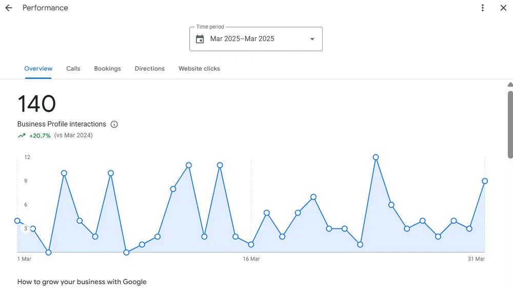
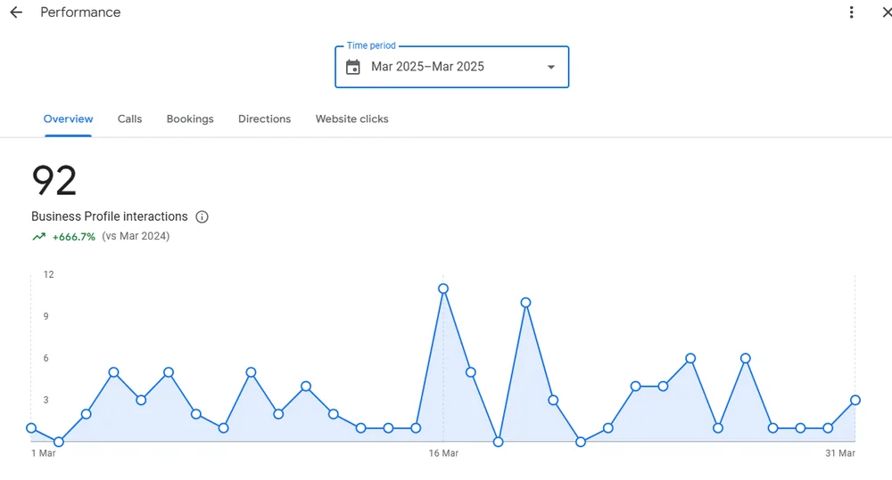
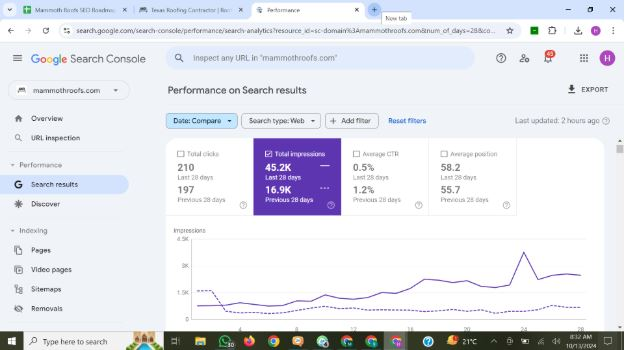
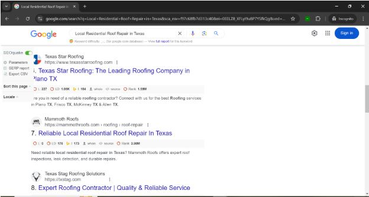

The Outcome: Multi-Location Calls Surged from 18 to 41 Across Texas
Over 28 days to October 2024, impressions rose from 16.9K to 45.2K (+167%) and clicks from 197 to 210, with the site ranking #6 for "copper roofing company in Texas". From February to March 2025, calls across four Google Business Profiles rose from 18 to 41 and profile interactions climbed from 233 to 350.
- San Antonio profile calls surged from 4 to 22 in a single month after optimizing categories, services, and photo geotagging.
- Temple profile interactions grew from 41 to 92 (+124%), capturing urgent commercial and storm-damage roof inquiries.
- Search Console impressions spiked from 16.9K to 45.2K over a 28-day comparison window.
The Challenge: Hyper-Competitive Texas Roofing & Mismatched GBP Listings
In Texas's aggressive roofing market, Mammoth Roofing was stuck beyond page one for high-ticket commercial keywords, with thin service pages and dormant Google Business Profiles.
- Dormant Business Profiles: Four regional offices had stagnant updates, missing service descriptions, and erratic NAP citations.
- Thin Commercial Pages: Specialized offerings (copper roofing, TPO commercial membrane) lacked dedicated technical authority.
- Uneven Territory Performance: Outlying profiles in Temple and Marble Falls received virtually zero phone leads.
The Strategy: 4-Profile Local SEO & Commercial Keyword Mapping
We synchronized four Google Business Profiles with over 50 hyper-targeted posts, 20 business directory citations, and dedicated Texas landing pages.
Texas Commercial Keyword Mapping
Mapped high-value commercial keywords (copper roofing, metal restoration, commercial repair) to dedicated service pages.
Multi-Location Google Business Profile Overhaul
Refreshed categories, secondary services, high-res project imagery, and standardized NAP across San Antonio, Austin, Temple, and Marble Falls.
Review & Post Cadence Framework
Published 50+ local updates with explicit geo-coordinates and customer satisfaction signals to stimulate map algorithm trust.
Google Business Profile & Search Console Proof
Click any capture to view verified report metrics in full resolution.




Actionable Roofing SEO Lessons
Multi-Location Profiles Require Unique Signals
Each GBP must have localized photos, service area configurations, and verified physical address proof to prevent suppression.
Impressions Precede Inbound Phone Calls
A 167% surge in search impressions builds the brand recall that subsequently converts into emergency call surges during storm season.
High-Ticket Specialty Services Win SERP
Targeting specialized services like copper or commercial membrane roofing faces less directory clutter and brings higher profit margins.